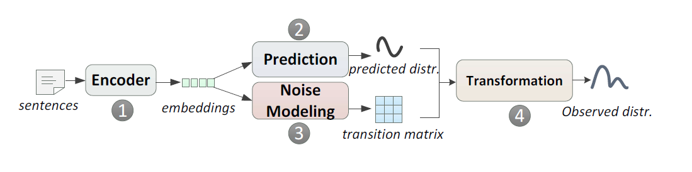
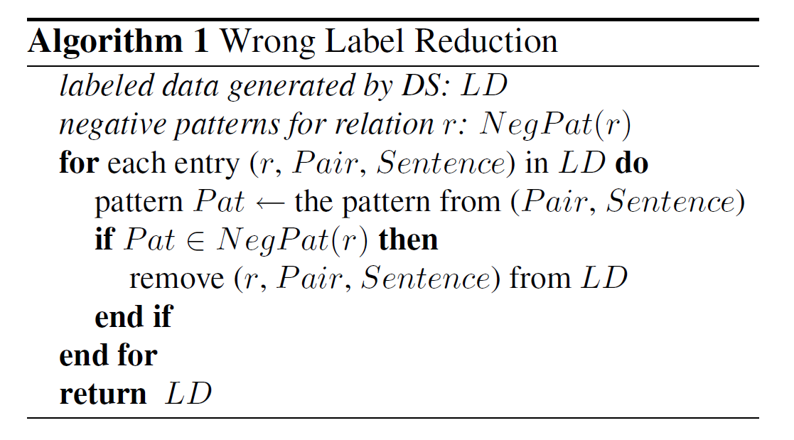

几个 relation extraction 远程监督模型
摘要：远程监督（Distant supervision）显著地减少了建立用于分类任务的训练集所需要的人工。但是这一项技术也会带来很大的噪音，并可能因此而大大地影响了模型的性能表现。这里，我们以 relation extraction 这项任务为例，深入讨论分析该噪声的分布。文献[1]提出了 dynamic-transition matrix，并证明了它能很好地代表了由 distant supervision 所带来的噪声。通过该矩阵，我们能够大大提高 relation extraction 的效果。文献[2]则是一种经典的方法，通过定义规则，定义否定模式（negative pattern）过滤掉一些噪音数据，可以很大程度提高性能。缺点是规则依赖人工定义，但是方法本身简单有效。文献[3]将 relation extraction 定义为一个 Multi-instance Multi-label 学习问题，一定程度上解决了错误标签的问题。
1. Problem of distant supervision
Distant supervision 是一种生成关系抽取训练集的常用方法。它把现有知识库中的三元组 \
但是，相比于人工标注方法，这种匹配方式会产生很多噪音：比如三元组\
2. Approaches to this problems
- 拟合噪音
- dynamic-transition matrix [1]
- 去除噪音
- 通过定义规则过滤掉一些噪音数据[2]，缺点是依赖人工定义，并且被关系种类所限制。
- Multi-instance learning[3], 把训练语句分包学习，包内取平均值，或者用 attention 加权，可以中和掉包内的噪音数据。缺点是受限于 at-least-one-assumption：每个包内至少有一个正确的数据。
下面我们简单介绍这几个模型。
2.1 Learning with dynamic-transition matrix [1]
文献[1] 提出了 dynamic-transition matrix，用于表达 Distant supervision 所产生的噪声。dynamic-transition matrix 可以通过基于 curriculum learning 的方法训练得到。通过该矩阵，我们能够大大提高 relation extraction 的效果，能够达到目前该领域的 state-of-the-art。

Transition matrix 是一个转移矩阵，记为T，大小为 n*n，n是关系种类的数目。T 的元素，$T_{ij}$的值是 p( j| i )，即该句子代表关系为 i，但被误判为 j 的概率。
这样我们就可以得到：𝑃𝑟𝑒𝑑𝑖𝑐𝑡𝑒𝑑 𝑑𝑖𝑠𝑡𝑟𝑖𝑏𝑢𝑡𝑖𝑜𝑛 × 𝑇𝑟𝑎𝑠𝑖𝑡𝑖𝑜𝑛 𝑚𝑎𝑡𝑟𝑖𝑥=𝑂𝑏𝑠𝑒𝑟𝑣𝑒𝑑 𝑑𝑖𝑠𝑡𝑟𝑖𝑏𝑢𝑡𝑖𝑜𝑛
其中，predicted 是我们想要的真实分布，observed 是我们观测到的噪音分布，这样就可以用噪音数据进行联合训练了。作者在 timeRE 和 entityRE(NYT) 上均进行了训练，取得了降噪的 state-of-art。具体分析结果可以参照论文。
2.2 Reducing Wrong Labels [2]
在关系提取方面，远程监督试图通过使用知识库（如Freebase）作为监督来源，从文本中提取实体之间的关系。 当一个句子和一个知识库引用同一个实体对时，这种方法试图用知识库中的对应关系来启发式地标注句子。 然而，这种启发式可能会导致一些句子被错误地标记。 这种嘈杂的标记数据导致较差的抽取性能。 在本文中，我们提出了一种减少错误标签数量的方法。 我们提出了一个新的生成模型，直接模拟远程监督的启发式标签过程。 该模型通过其隐藏变量来预测分配的标签是正确的还是错误的。在实验中，我们也发现错误的标签减少提高了关系抽取的性能。

NegPat(r)即为事先定义的对于r的否定模式（negative pattern）。在我们的方法中，我们按如下所示去除错误标签：（i）给定一个已标注的语料库，我们首先验证其中的模式是否表达一种relation，然后（ii）使用否定模式列表（NegPat）去除错误的标签， 即该模式被定义为不表示relation的模式。 第一步，我们引入新的生成模型，直接模拟DS的标注过程并进行预测。 第二步在算法1中描述，见上图。对于关系提取，我们使用上述得到的标注数据来训练分类器（给定实体对，该分类器预测所属关系）。
2.3 Multi-instance Multi-label Learning [3]
很多的共现 entities 都没有什么关系，仅仅是出现在同一个句子中；而有的 entities 之间的关系其实并不仅仅只有一种，可能有多种，比如奥巴马和美国的关系，可能是 born in，也可能是 is the president of 的关系。
因此训练集会产生大量的错误标记，比如两个实体有多种关系或者根本在这句话中没有任何关系，这样的训练数据会对关系抽取器产生影响。正因为如此，传统的监督式学习，假设每个实例明确地映射到一个标签，是不合适的。
对于这个问题，我们将关系抽取定义为一个 Multi-instance Multi-label 学习问题，它使用带有潜在变量的图模型，对文本中一对实体的所有实例以及它们的所有标签进行联合建模。 该模型在 relation extraction 领域表现出色。
3. Conclusion
上面提到的几个模型都有其新颖的地方，其中[1]这种拟合噪音的思想很有创新点，实际的效果也很理想；而后两个模型主要都是在数据预处理阶段进行，因此可以和其他 relation extraction 模型很好的结合。
References
*笔记部分参考论文浅尝 | Learning with Noise: Supervised Relation Extraction
[1] Luo, Bingfeng, et al. “Learning with noise: enhance distantly supervised relation extraction with dynamic transition matrix.” arXiv preprint arXiv:1705.03995 (2017).
[2] Takamatsu, Shingo, Issei Sato, and Hiroshi Nakagawa. “Reducing wrong labels in distant supervision for relation extraction.” Proceedings of the 50th Annual Meeting of the Association for Computational Linguistics: Long Papers-Volume 1. Association for Computational Linguistics, 2012.
[3] Surdeanu, Mihai, et al. “Multi-instance multi-label learning for relation extraction.” Proceedings of the 2012 joint conference on empirical methods in natural language processing and computational natural language learning. Association for Computational Linguistics, 2012.